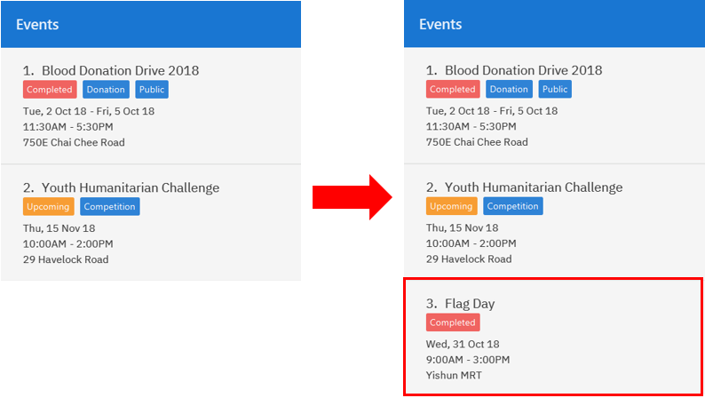
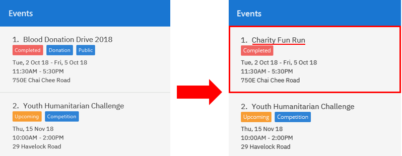
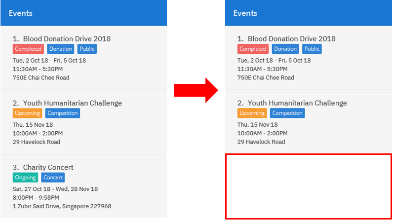

1. Overview
This portfolio page documents my involvement in SocialCare, a project done as part of the CS21303T Software Engineering module taught in NUS.
SocialCare is a desktop application made for social welfare organizations. The application is designed to help manage volunteers and events effectively. Users interact with the application using a Command Line Interface (CLI). In addition, SocialCare has a Graphical User Interface (GUI) to display information in a user-friendly manner.
My role as a developer for SocialCare is to implement record management functions, which enables users to do the following:
-
Assign volunteers to event
-
Update volunteering records for volunteers
-
Delete volunteering records of volunteer
2. Summary of Contributions
-
Major enhancement: added commands to manage volunteer records
-
What it does: The commands implemented allows the user to manage volunteering records. They will be able to assign volunteers to events and update the number of hours contributed by the volunteer.
-
Justification: These functions are part of the core requirements for the application because we want users to be able to effectively manage volunteering records.
-
Highlights: This enhancement affects existing commands and commands to be added in future. It required an in-depth analysis of design alternatives. The implementation too was challenging as it required changes to existing commands.
-
-
Minor enhancement: added a command to allow users to switch between panels. The panels are used to display either volunteers or events for users to manage.
-
Other contributions:
-
Project management:
-
Set up the team repository on GitHub
-
Assigned and tracked project tasks
-
Ensured that project deliverables are done on time and in the right format
-
-
Documentation:
-
Community:
-
Tools:
-
Integrated Travis to the Github repository
-
-
3. Contributions to the User Guide
Given below are sections I contributed to the User Guide. They showcase my ability to write documentation targeting end-users. |
3.1. Switching panels: switch
Switches the panel to display either volunteers or events
Format: switch -CONTEXT_ID
Example(s):
-
switch -e
Updates the panel displaying the list of volunteers to display the list of events.
The following figure shows the expected panel before and after entering theswitchcommand.
3.2. Volunteer Management
3.2.1. Registering new volunteer: add
Adds a volunteer to the system when in the volunteers context
Format: add n/NAME g/GENDER b/BIRTHDAY p/PHONE_NUMBER e/EMAIL a/ADDRESS [t/TAG]…
Example(s):
The figure above shows how the panel looks like before executing the commands below.
-
`add n/John Doe g/m b/05-08-1995 p/87183749 e/John@gmail.com a/Yishun Block 62 `
Adds a volunteer with the following properties:
Property Value Name
John Doe
Gender
m
Birthday
05-08-1995
Phone
87183749
Email
Address
Yishun Block 62
 Figure 3. Output of
Figure 3. Output ofadd -
add n/Betty Sue g/f b/31-12-1995 p/81749272 e/Betty@gmail.com a/Ang Mo Kio Block 62 t/Longtime t/HelpfulAdds a volunteer with the following properties:
Property Value Name
Betty Sue
Gender
f
Birthday
31-12-1995
Phone
81749272
Email
Address
Ang Mo Kio Block 62
Tags
Longtime, Helpful
 Figure 4. Output of
Figure 4. Output ofadd
3.2.2. Listing all volunteers : list
Lists all volunteers in the system when in the volunteers context.
Format: list
The figure below shows the expected panel after executing the list command.

list3.2.3. Editing volunteers details : edit
Edit details of an existing volunteer in the system when in the volunteers context.
Format: edit VOLUNTEER_INDEX [n/NAME] [g/GENDER] [b/BIRTHDAY] [p/PHONE_NUMBER] [a/ADDRESS] [e/EMAIL] [a/ADDRESS] [t/TAG]…
Example(s):
-
edit 1 n/John Doe
Edits the name of the volunteer at index 1
The figures below show the before and after results of an edit command.
3.2.4. Deleting volunteer details : delete
Deletes details of an existing volunteer in the system when in the volunteer context.
Format: delete VOLUNTEER_INDEX
Example(s):
-
delete 1
Deletes the details of the volunteer specified at index 1
The figures below show the before and after results of a delete command.
3.2.5. Exporting volunteer certificate : exportcert
Exports a PDF document to a folder in the user’s current working directory or directly to the desktop, detailing the volunteer’s involvement with the organisation. This document includes:
-
Title: 'Certificate of Recognition'
-
Date of export
-
Volunteer name
-
Volunteer ID
-
List of events involved in - Event name, hours contributed, event start and end dates
Format: exportcert VOLUNTEER_INDEX
-
Exports PDF certificate for the volunteer at specified
VOLUNTEER INDEX -
VOLUNTEER INDEXmust be a positive integer 1, 2, 3, … -
If the index given exceeds the number of volunteers in the displayed volunteer list, the message 'The volunteer index provided is invalid.' will be shown.
Example(s):
-
exportcert 2
Exports PDF certificate of volunteer at specified index 2 to folder 'Volunteer Certs' in the current working directory, or directly to the Desktop. A success message will also be displayed in the following form: 'Certificate exported for volunteer at <INDEX> to <EXPORT FOLDER>'.
Here is what the exported certificate currently looks like:

Here is the intended final form of the exported certificate:

|
To avoid exported file name clashes for volunteers with the same name, we have appended the volunteer ID to the filename as well. Exported file names will have the format '<VOLUNTEER NAME>_<VOLUNTEER ID>.pdf' (E.g. John Doe_1.pdf) |
3.3. Event Management
The following commands can only be accessed after switching to the 'event' panel. (see Switching panels: switch)
3.3.1. Adding new event: add
Adds an event to the system.
Format: add n/NAME l/LOCATION sd/START_DATE ed/END_DATE st/START_TIME et/END_TIME d/DESCRIPTION [t/TAG]…
Example(s):
The figure below shows how the panel looks like before executing the example(s) below.
-
add n/Flag Day l/Yishun MRT sd/31-10-2018 ed/31-10-2018 st/09:00 et/15:00 d/For the children’s homeAdds an event with the properties specified in the command above. The expected result is shown in the figure below.
Figure 13. Result ofadd n/Flag Day l/Yishun MRT sd/31-10-2018 ed/31-10-2018 st/09:00 et/15:00 d/For the children’s home -
add n/Fundraising l/Tampines Street 31 sd/15-11-2018 ed/17-11-2018 st/13:00 et/18:00 d/Raising funds t/fundraiser t/charityAdds an event with the properties specified in the command above. The expected result is shown in the figure below.
 Figure 14. Result of
Figure 14. Result ofadd n/Fundraising l/Tampines Street 31 sd/15-11-2018 ed/17-11-2018 st/13:00 et/18:00 d/Raising funds t/fundraiser t/charity
3.3.2. Listing all events : list
Lists all events in the system and display them in the panel.
Format: list
Displays all existing events in the system in the panel.
The figure below shows a panel displaying all existing events after executing the list command.

list3.3.3. Editing event details : edit
Edit details of an existing event in the system when in the 'event' context.
Format: edit EVENT_INDEX [n/NAME] [l/LOCATION] [sd/START_DATE] [ed/END_DATE] [st/START_TIME] [et/END_TIME] [d/DESCRIPTION] [t/TAG]…
Example(s):
The figure below indicates the EVENT_INDEX and shows how the panel looks like before executing the example(s) below.

-
edit 1 n/Charity Fun Run t/
Edits the name of event at index 1 and removes all tags. The expected result is shown in the figure below.Figure 17. Result ofedit 1 n/Charity Fun Run t/
3.3.4. Deleting event: delete
Deletes an existing event in the system when in the 'event' context.
Format: delete EVENT_INDEX
Example(s):
The figure below indicates the EVENT_INDEX and shows how the panel looks like before executing the example(s) below.
-
delete 3
Deletes the event specified at index 3. The expected result is shown in the figure below.Figure 18. Result ofdelete 3
3.4. Record Management
This section contains commands related to managing a volunteering record.
3.4.1. Viewing event’s volunteer records: manage
The panel updates to show the list of volunteers while the display area shows the volunteers currently registered for the selected event.
Format: manage EVENT_INDEX
Example(s):
-
switch -e(panel updates to show list of events)
manage 1(view the list of volunteers assigned to event at index 1)
See the figures below for a step by step guide.
switch -emanage 1 targets the event at index 1
manage 1The last figure shows the screen you will see after executing the manage command successfully.
The following changes are observed:
-
Panel displays the list of volunteers that you can assign to an event.
-
Name of event being managed and total number of volunteers assigned to it.
-
List of volunteers currently assigned to the event. It will be empty if no volunteers are assigned.
3.4.2. Adding volunteer to event: add
Adds a volunteer to the event that is currently being managed.
Refer to Viewing event’s volunteer records: manage on how to manage events.
Format: add VOLUNTEER_INDEX [h/HOURS] [r/REMARKS]
Example(s):
|
The following examples are entered after executing the following commands: 1. switch -e (update panel to display events)2. manage 1 (manage the event at index 1 in the panel. See figure below for expected screen)
|

manage 1-
add 1
Adds a volunteer at index 1 to the event with 0 hours.
Expected display box is shown in the figure below.
add 1-
add 1 h/5 r/Driver
Adds a volunteer at index 1 to the event with 5 hours and remarks of 'Driver'.
Expected display box is shown in the figure below.
add 1 h/5 r/Driver3.4.3. Updating volunteer record: edit
Updates a volunteer record in the event that is currently being managed.
Refer to Viewing event’s volunteer records: manage on how to manage events.
Format: edit VOLUNTEER_INDEX h/HOURS [r/REMARKS]
The figure below shows the highlighted column that indicates the VOLUNTEER_INDEX that you have to enter.
This display can be seen after executing the manage command.
Example(s):
-
edit 2 h/5 r/Emcee
Updates amount of hours volunteered for volunteer at index 3 to 5 hours with remarks of 'Emcee'.
The figures below show the display box before and after editing a record.

edit 2 h/5 r/Emcee3.4.4. Deleting volunteer record from event: delete
Deletes the volunteer record from the event that is currently being managed.
Refer to Viewing event’s volunteer records: manage on how to manage events.
Format: delete VOLUNTEER_INDEX
The figure below shows the highlighted column that indicates the VOLUNTEER_INDEX that you have to enter.
This display can be seen after executing the manage command.
Example(s):
-
delete 1
Deletes the volunteer record at index 1.
The figures below show the display box before and after deleting a record.
delete 13.5. Miscellaneous
3.5.1. Saving data
SocialCare data are saved in the hard disk automatically after any command that changes the data.
There is no need to save manually.
4. Commands Summary
This section contains a summary of the commands available.
4.1. General Commands
| Command | Format | Example | Section Link |
|---|---|---|---|
Clear |
|
|
|
Help |
|
|
|
History |
|
|
|
Redo |
|
|
|
Switch |
|
|
|
Undo |
|
|
4.2. Volunteer Management
| Command | Format | Example | Section Link |
|---|---|---|---|
Add |
|
|
|
Delete |
|
|
|
Edit |
|
|
|
Export Certificate |
|
|
|
List |
|
|
4.3. Event Management
| Command | Format | Example | Section Link |
|---|---|---|---|
Add |
|
|
|
Delete |
|
|
|
Edit |
|
|
|
List |
|
|
4.4. Record Management
| Command | Format | Example | Section Link |
|---|---|---|---|
Add |
|
|
|
Delete |
|
|
|
Edit |
|
|
|
Manage |
|
|
5. Glossary
| Term | Explanation |
|---|---|
GUI |
Graphical User Interface. |
6. FAQ
Q: How do I transfer my data to another Computer?
A: Install the app in the other computer and overwrite the empty data file it creates with the file that contains the data of your previous SocialCare folder.
6.1. Viewing event’s volunteer records: manage
The panel updates to show the list of volunteers while the display area shows the volunteers currently registered for the selected event.
Format: manage EVENT_INDEX
Example(s):
-
switch -e(panel updates to show list of events)
manage 1(view the list of volunteers assigned to event at index 1)
See the figures below for a step by step guide.
switch -emanage 1 targets the event at index 1
manage 1The last figure shows the screen you will see after executing the manage command successfully.
The following changes are observed:
-
Panel displays the list of volunteers that you can assign to an event.
-
Name of event being managed and total number of volunteers assigned to it.
-
List of volunteers currently assigned to the event. It will be empty if no volunteers are assigned.
6.2. Adding volunteer to event: add
Adds a volunteer to the event that is currently being managed.
Refer to Viewing event’s volunteer records: manage on how to manage events.
Format: add VOLUNTEER_INDEX [h/HOURS] [r/REMARKS]
Example(s):
|
The following examples are entered after executing the following commands: 1. switch -e (update panel to display events)2. manage 1 (manage the event at index 1 in the panel. See figure below for expected screen)
|
manage 1-
add 1
Adds a volunteer at index 1 to the event with 0 hours.
Expected display box is shown in the figure below.
add 17. Contributions to the Developer Guide
Given below are sections I contributed to the Developer Guide. They showcase my ability to write technical documentation and the technical depth of my contributions to the project. |
7.1. Switch command
The switch command is used to switch the context between 'volunteer' and 'event'.
Current implementation
This switch command requires the SwitchCommandParser class to parse user input and help determine the context to switch to.
SwitchCommandParser implements the Parser class which has the Parser#parse() operation. This operation will throw an error if the user input does not match the command format or is an invalid context to switch to.
|
There are only 2 valid contexts which a user can switch to with the command. v: 'volunteer' context e: 'event' context |
The switch command updates the context found in ModelManager before raising the context change event to update the UI.
The figure below is the sequence diagram to show how the switch command works when switching from volunteer to event context.

Design considerations
Aspect: How context is maintained
-
Alternative 1 (current choice): Create a new
Contextclass.Pros
Can support even more contexts in the future due to the flexibility of a class.
Cons
Tedious to do as relevant methods have to be implemented in model.
-
Alternative 2: Pass a hard-coded context id around.
Pros
No need to create a new object to handle the context.
Cons
Difficult to maintain the id throughout the whole application. Any change in context id would require all the codes to be updated.
7.2. Manage command
The manage command is used in the 'event' context to manage the volunteering records for an event.
Current implementation
This manage command requires the ManageCommandParser class to parse user input and determine which event to manage.
ManageCommandParser implements the Parser class which has the Parser#parse() operation. This operation will throw an error if the user input is an invalid event id.
The manage command updates the context found in ModelManager through the model#switchToRecordContext() function.
In addition to updating the context, the manage command also does the following:
-
Clear all predicates for volunteer list.
-
Filter the existing records by the selected event.
-
Raise a
RecordChangeEventto set the selected event. -
Raise a
ContextChangeEventto update the UI.
The figure below is the sequence diagram to show how the switch command works when switching from volunteer to event context.
Design considerations
Aspect: Context switching
-
Alternative 1 (current choice): Utilize
Contextclass used in theswitchfunction. (See Switch command)Pros
No need to create a new class to change context.
Cons
Have to create a new method in
Contextclass to handle parsed user input. -
Alternative 2: Pass event and volunteer objects via
LogicManager.Pros
Implementation is easy.
Cons
Classes becomes tightly coupled. The UI component would have access to methods it does not need.